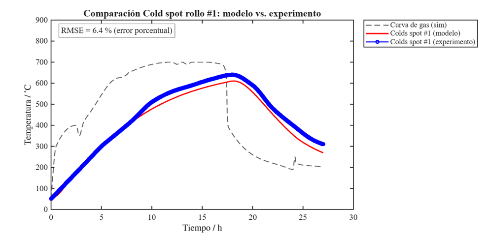
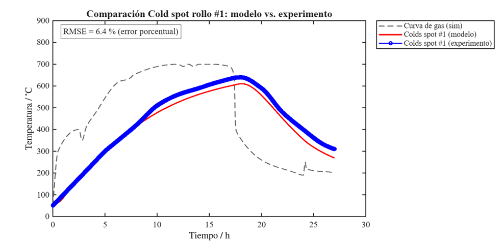

Heat Diffusion in Steel Annealing
Numerical modeling of heat diffusion in steel coils during the annealing process used in industrial bell furnaces. A physically motivated diffusion model was implemented to capture the transient thermal behavior of the material under controlled furnace conditions.
ApproachThe project emphasizes the relationship between thermal diffusivity, geometry, and process time, providing insight into how annealing duration can be optimized without compromising material quality. Results are supported by visual animations illustrating the evolution of the temperature field.
Tools 

Thermal–Energy Optimization
Analysis of the thermal performance of photovoltaic systems enhanced with cooling technologies inspired by Munters industrial solutions. A thermodynamic energy balance model was developed to study the impact of convective and radiative cooling on panel efficiency.
ApproachThe project integrates real environmental data, heat transfer theory, and numerical simulation to evaluate performance improvements and economic feasibility. The work is structured as a technical document aimed at applied energy optimization problems.
Tools
Optical Telescope Construction
Complete design, construction, calibration, and characterization of a functional optical telescope. The project includes theoretical calculations of magnification, focal lengths, and resolution, as well as ray-tracing simulations based on the physical dimensions of the prototype.
ApproachExperimental calibration techniques were applied to quantify measurement uncertainty and image quality. The project documents both the theoretical framework and experimental methodology, supported by original photographs of the telescope and observed astronomical objects.
Tools